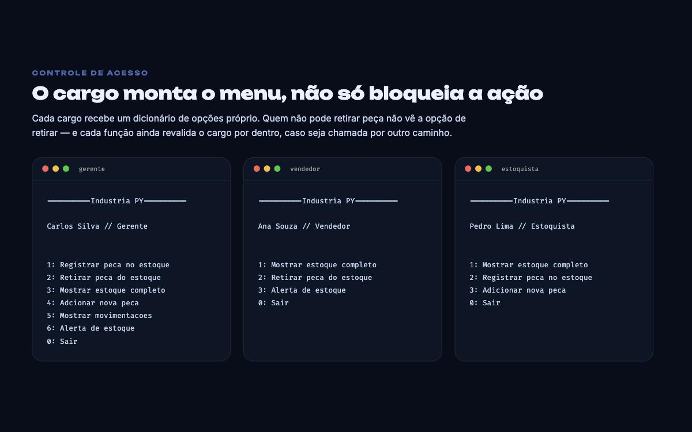
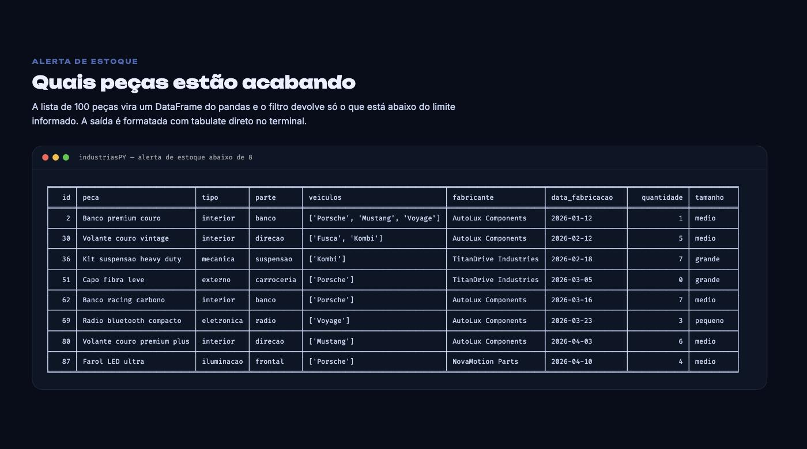
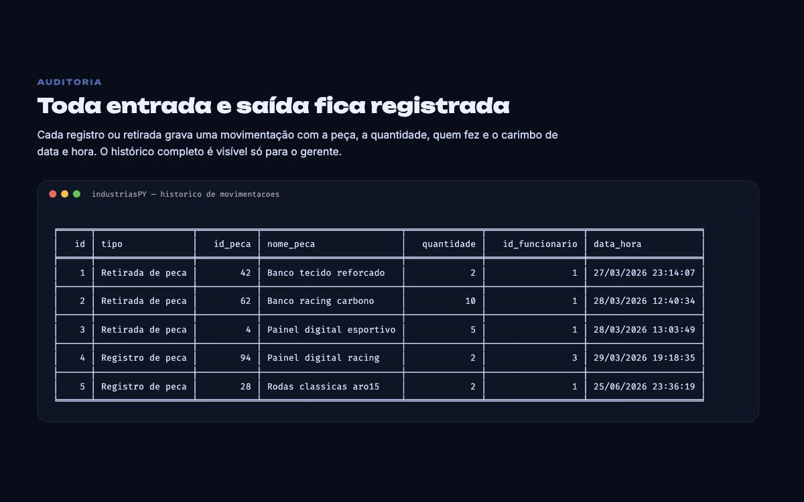

Voltar aos projetos
Industria PY
Controle de estoque de peças automotivas, inteiro no terminal
- O que é
- Um sistema de estoque para uma distribuidora de peças: cadastro, entrada e saída de produto, consulta e histórico — com login e permissões diferentes por cargo. A base de teste tem 100 peças catalogadas por tipo, parte, veículos compatíveis e fabricante.
- Permissão por cargo, em duas camadas
- Cada cargo tem seu próprio dicionário de opções, então o menu já nasce diferente: o gerente vê seis ações, o vendedor três, o estoquista três outras. Quem não pode retirar peça nem enxerga a opção. Além disso cada função revalida o cargo por dentro — esconder a opção é conveniência, a checagem é que é a regra.
- Busca por nome, desempate por ID
- A pesquisa é por trecho do nome e sem diferenciar maiúsculas. Quando mais de uma peça casa, o sistema lista as candidatas e pede o ID — em vez de escolher sozinho e mexer no item errado.
- Saída nunca deixa o estoque negativo
- Antes de baixar a quantidade, a retirada confere se há saldo suficiente e recusa a operação se não houver.
- Histórico de movimentações
- Toda entrada e saída grava um registro com a peça, a quantidade, quem fez e a data e hora. O histórico completo fica visível só para o gerente.
- Alerta de estoque baixo
- A lista de peças vira um DataFrame do pandas e um filtro devolve o que está abaixo do limite informado, formatado com tabulate. É a consulta que responde "o que preciso comprar esta semana".
- Persistência
- Tudo mora num JSON único com três coleções — peças, funcionários e movimentações — lido e regravado a cada operação. Sem banco para instalar: clonar e rodar basta.
-

Um menu por cargo -

Alerta de estoque baixo -

Histórico de movimentações